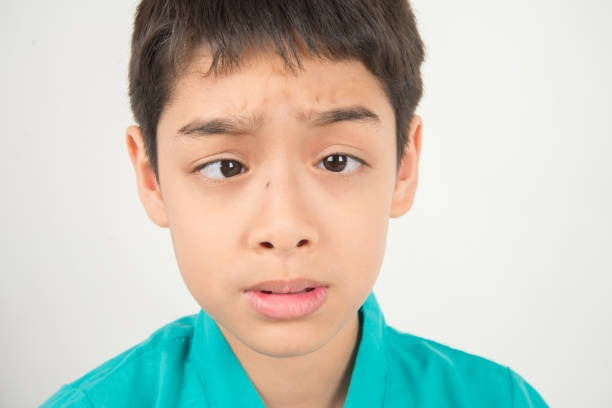

Squint (Strabismus)
Misalignment of the eyes where both eyes do not look in the same direction — affecting vision, depth perception and confidence.

What is a Squint Eye?
A condition where the eyes are misaligned and do not point in the same direction, leading to cosmetic and visual problems.
A squint, medically known as strabismus, occurs when both eyes do not look at the same object at the same time. While one eye is looking straight, the other may turn inwards, outwards, upwards or downwards.
Squint can be present from birth or develop later in life due to eye injury, nerve problems or other illnesses. It may be constant (always visible) or intermittent (seen only at times, usually when tired).
Apart from cosmetic concerns and social embarrassment, untreated squint can lead to reduced vision in one eye (amblyopia) and loss of 3D (binocular) vision.
What Causes Squint Eye?
Squint usually occurs due to an imbalance in the eye muscles or their nerve control. When some muscles are weaker or not working in sync, one eye looks straight while the other turns in a different direction. The brain then starts ignoring the image from the weaker eye.
In many cases, the exact cause is not fully clear, but possible reasons include:
- Refractive errors such as hyperopia (long-sightedness), myopia and astigmatism
- Unequal refractive error (difference in power) between the two eyes
- Brain trauma or neurological causes
- Myasthenia gravis or Sixth Cranial Nerve palsy in children (sudden esotropia)
- Trauma to the eye
- Duane’s Syndrome, Strabismus Fixus
- Previous squint surgery with decompensation
- Paralytic squint due to hypertension or diabetes
- Thyroid Eye Disease and post-sinus surgery complications
In the first few months of life, the baby learns to focus, move the eyes accurately and use them together. If proper visual impulses are not received, amblyopia (lazy eye) and loss of binocular vision can occur.
Symptoms of Squint Eye
- Eyes looking in different directions at the same time
- Eyes that do not move together
- Squinting or closing one eye, especially in bright sunlight
- Poor side (peripheral) vision
- Poor depth perception (difficulty judging distances)
- Sometimes double vision (mainly in adults with recent squint)
Risk Factors for Developing Squint
- Family history: Squint in parents or siblings
- Refractive error: Significant hyperopia (far-sightedness) increases strain on the eyes, causing them to turn inwards to focus.
- Medical conditions: Stroke, Down Syndrome, Cerebral Palsy and other neurological disorders can increase squint risk.
Types of Squints
Squints are classified based on the direction in which the eye turns:
- Esotropia: Eye turns inwards towards the nose.
- Exotropia: Eye turns outwards.
- Hypertropia: Eye turns upwards.
- Hypotropia: Eye turns downwards.
Can Squints Be Corrected?
Yes. Squints can often be improved or corrected with a combination of non-surgical and surgical treatments, depending on the cause and severity.
Non-Surgical Treatment
- Glasses: Correct underlying refractive errors and may straighten the eyes in some children.
- Eye patching: Covering the stronger eye to force the weaker eye to work and improve vision (used in amblyopia).
- Eye exercises: Such as pencil push-ups and barrel cards in selected cases to improve eye coordination.
- Prisms: Special lenses used to manage double vision or improve cosmetic alignment in some patients.
- Botox injections: In selected squint types, botulinum toxin may be used to weaken overacting muscles.
Early and appropriate treatment reduces the risk of permanent vision problems and improves cosmetic appearance.
Squint Surgery
When non-surgical treatments are insufficient, squint surgery is recommended. The goal is to realign the eyes and, where possible, restore binocular vision.
Depending on the degree and direction of the deviation, the surgeon tightens or loosens one or more eye muscles in one or both eyes. Surgical planning is based on nomograms — tables developed from results of thousands of squint surgeries.
Squint correction surgery is available at Maa Nursing Home and NetraJyoti Eyecare Centre, with options tailored to both children and adults.
Why Treat Squint Early?
- Prevents lazy eye (amblyopia)
- Improves binocular and 3D vision
- Boosts confidence & social interaction
- Reduces risk of long-term visual disability